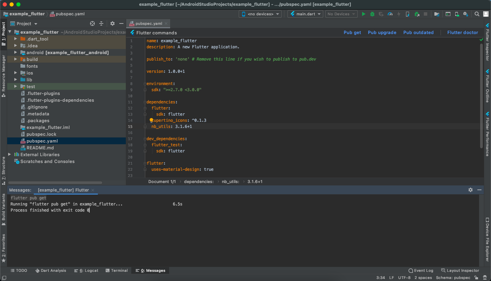

Prerequisite Tools & Setup
- Introduction
- Tools & Setup
- Setup flutter in android studio - Windows
- Setup flutter in android studio - macOS
- Setup flutter in android studio - Linux
Getting Started (Build & Run)
Configuration & Customization
Get Started (Build & Run)
Follow below steps to build and run your application
Step 1 : Download Project
Download and find the your project folder, use your preferred IDE (Android Studio / Visual Studio Code / IntelliJ IDEA) to run the project.

Step 2 : Get Dependencies
After you loaded project successfully, run the following command in the terminal to install all the dependencies listed in the pubspec.yaml file in the project’s root directory or just click on Pub get in pubspec.yaml file if you don’t want to use command.
flutter pub get
You will see below like screen after you have build your app successfully
Step 3 : Build and Run App
- Locate the main Android Studio toolbar.
- In the target selector, select an Android device for running the app. If none are listed as available, select Tools > Android > AVD Manager and create one there. For details, see Managing AVDs.
- Click the run icon in the toolbar, or invoke the menu item Run > Run.
flutter run